Konanshi, Shiga: things to do, food and stays
Konanshi · Shiga
Konanshi
Highlighted on the Shiga map.
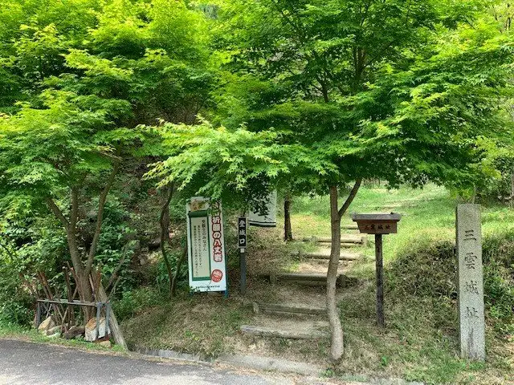
Stay
甲西ステイbizホテル
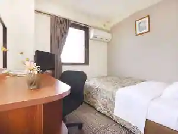
Kosai Sutei biz Hotel
ＡＢホテル湖南
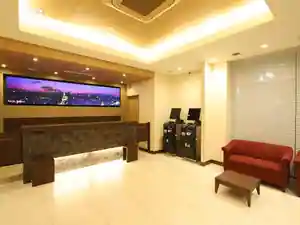
AB Hotel Konan
Hotel in Chuo, Konanshi with buffet meals and breakfast available.
HOTEL R9 The Yard 湖南
HOTEL R9 The Yard Konan
Inn in Natsumi, Konanshi with lakeside location.
ホテルサンクレスト
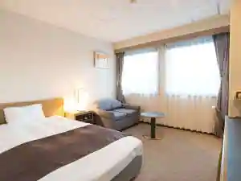
Hotel Sankuresuto
Hotel in Iwanechuo, Konanshi with a sauna and a large communal bath.
ビジネスホテルミクモ
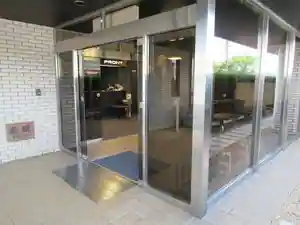
Business Hotel Mikumo
Hotel in Mikumo, Konanshi with business travelers.
旅館松月
Ryokan Matsuzuki
Ryokan inn in Asakuni, Konanshi with business travelers.
Dining
やくも
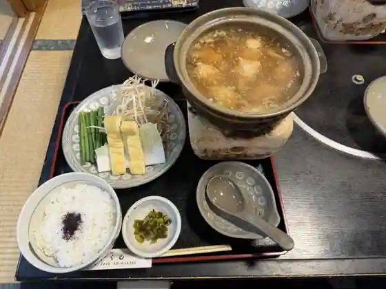
Yakumo
みくりやうどん
Mikuriyaudon
溶岩焼肉 徳志満
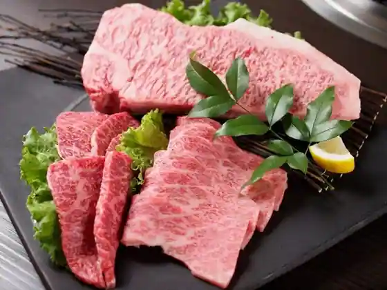
Yogan Yakiniku Tokushi Man
拉麺ハッパ
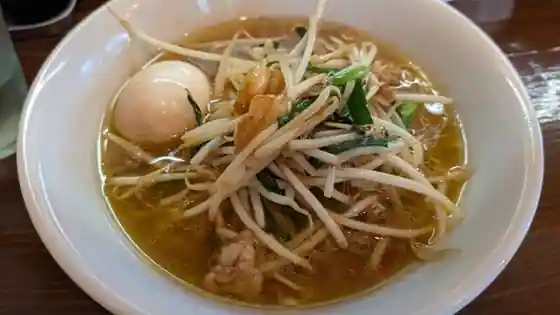
Ramen Happa
麺屋 蒼空豚
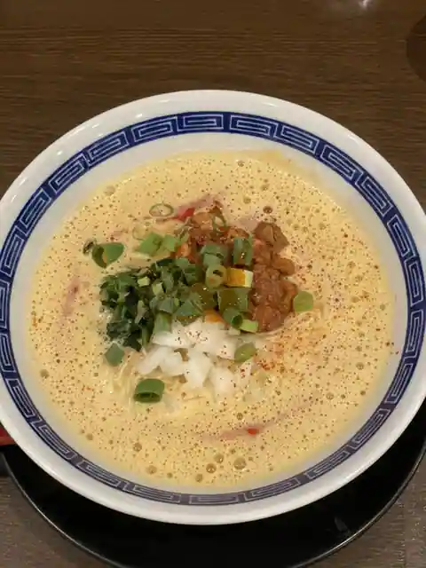
Men Ya Soku Buta
麺屋 昊鶏
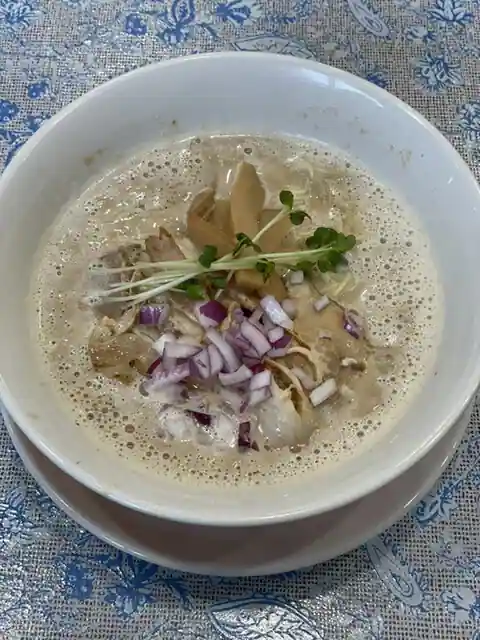
Men Ya Ko Niwatori
食事処 たまや
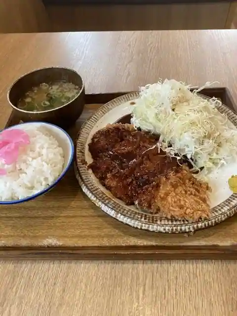
Shokuji Tokoro Tamaya
天下ご麺 湖南店スペリオル
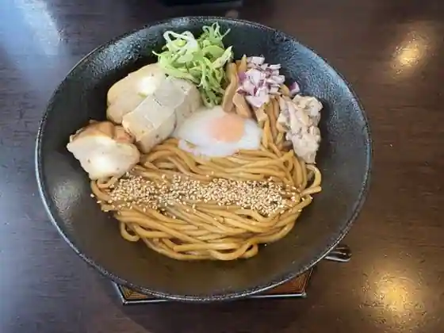
Tenka Go Men Konan Mise Superioru
レストラン潮
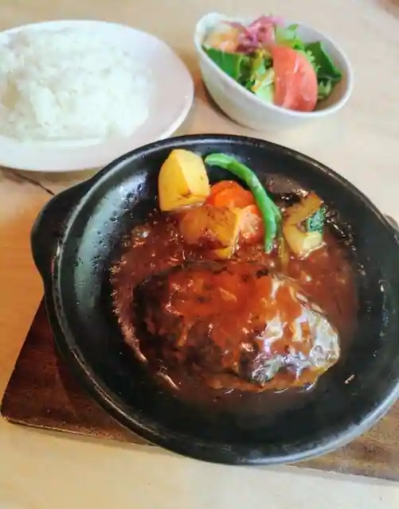
Restaurant Shio
菩提寺パーキングエリア(上り線) フードコート
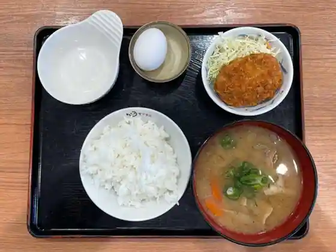
Bodai Tera Pakingueria (Nobori Sen) Fudokoto
こむすび
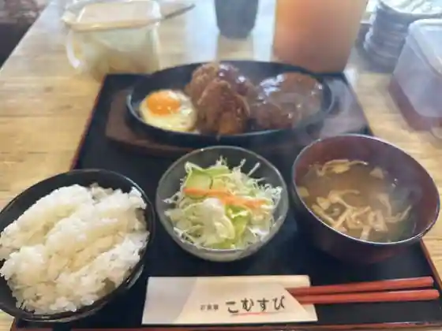
Komusubi
焼肉 慶州
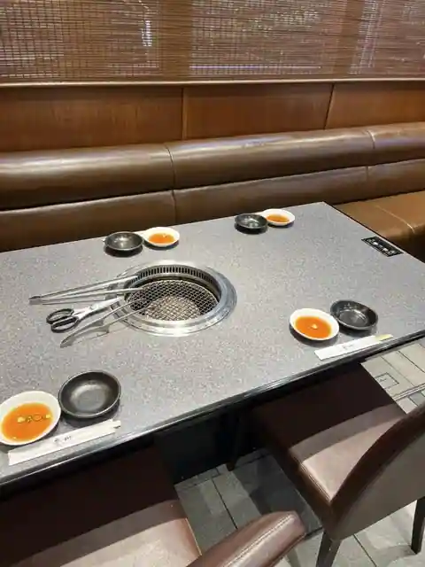
Yakiniku Keishu
やまびこ
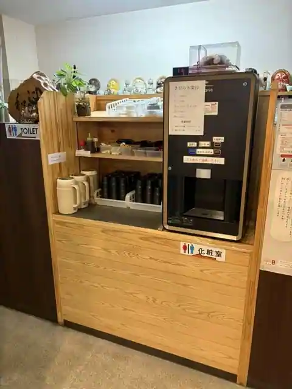
Yamabiko
ビールとハイライト
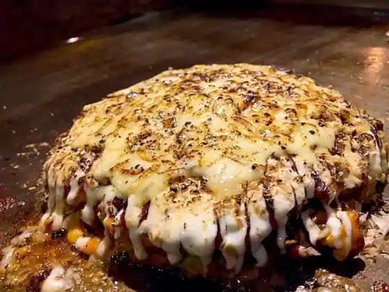
Beer To Hairaito
菩提寺パーキングエリア（下り線）スナックコーナー
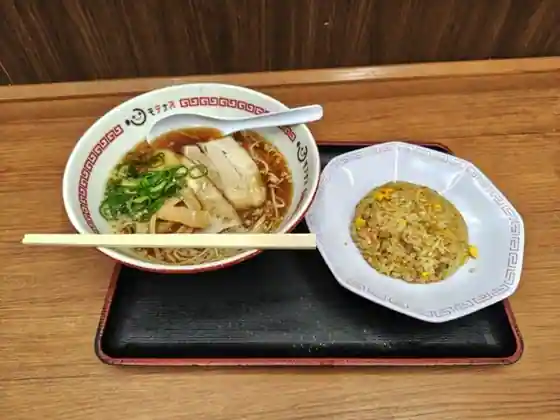
Bodai Tera Pakingueria (Kudari Sen) Sunakkukona
満喜
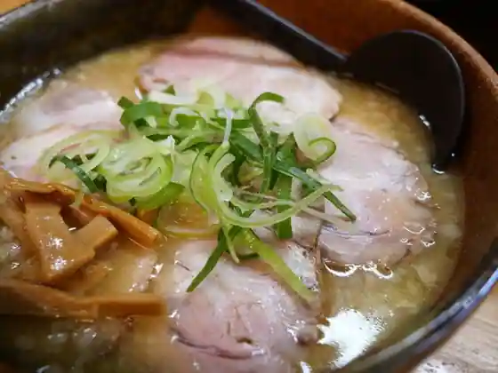
Maki
つむじ
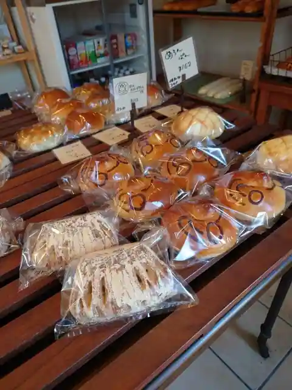
Tsumuji
すしふじ
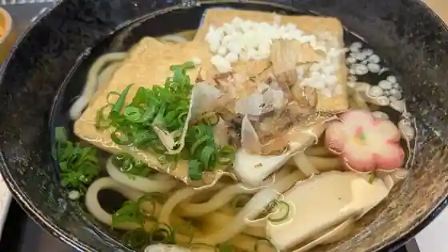
Sushifuji
noosa
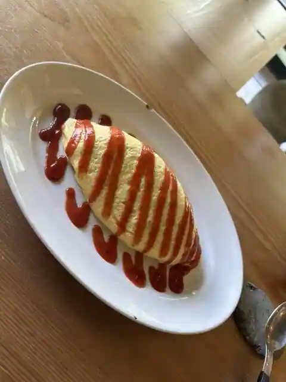
noosa
谷口長栄堂
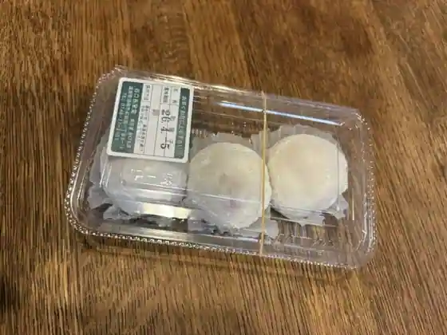
Taniguchi Choei Do
とり長食堂
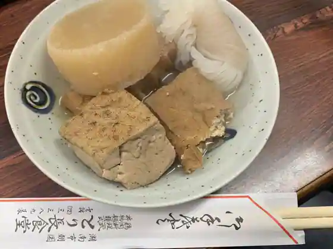
Tori Cho Shokudo
聚福
Ju Fuku
ママの手
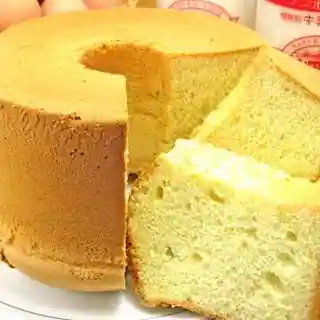
Mama No Te
やまりゅうレストラン 中央店
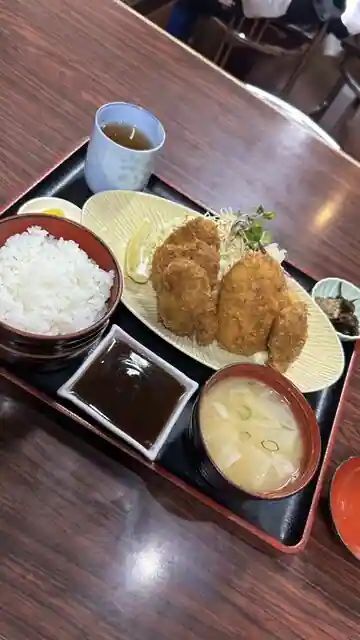
Yamaryu Restaurant Chuo
Sights
Ishibe Yado Kojima Honjin Ato
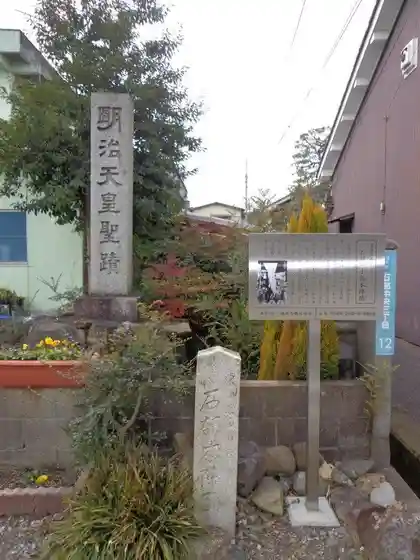
Tenpo Gimin Hi
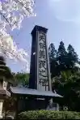
Kichi Hime Shrine
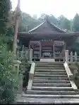
Mikumo Joshi
Konanshi Tokaido Ishibe Yado Folk History Museum
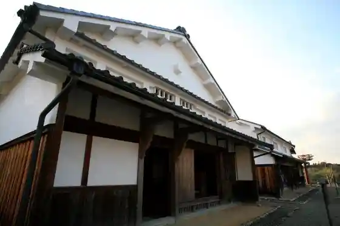
Juraku Village
Ishibe Yado Iriguchi Nishi Nawate
Mizumi Kuni Juni Bo Forest Juni Bo Onsen Yurara
Uzan Bunka Sports Park
Nigori Ike Nature Park
Shiun Falls
Ue Ashiho Shrine
Ishibe Yado Dengaku Chaya
JR Ishibe Eki
Omi Tsukemo no Yamagami Main Shop
Ishibe Bunka Horu
Nishi O Tera
Myo Kan Tera
Hotel Sankuresuto Kosai
Kosatsu Ba Ato Tokiwa Yakatato
Ishibe Yado
Hiramatsu no Utsukushimatsu Jisei Chi
Rokkaku Shi no Kamon (Yotsu Meyui) Wo Kizan Da Iwa
Yamaryu
Eisho In
Hakusan Shrine
Dai Sagawa Suido
Kichi Miko Shrine
Sono Yo Tera
Kitajima Shuzo
Bodai Zendera
Koka Kobunshi Sutajiamu
Kosai Bunka Horu
Koka Beifun Tai Yaki
Choju Tera (Toji Konanshi Miyama)
Garyu Forest
Joraku Tera (Nishi Tera Konanshi Miyama)
Jojo Tera
Zen Mizu Tera (Konanshi Miyama)
Hironori Sugi
Fudo Tera
Ebi Tani Kogei
Hieda Shrine
Atorie Ai
Kokopia
Koka Kantorii Kurabu
Matsuo Shrine
Hai Sho Bodai Tera
Magai Fudomyo Zo
Konanshi Sogo Gym
Kon Ki Senshoku
Iwane Yama (Juni Bo)
Sei Fuku Tera (Konanshi)
Ishibe Shukueki
Konanshi Yakusho